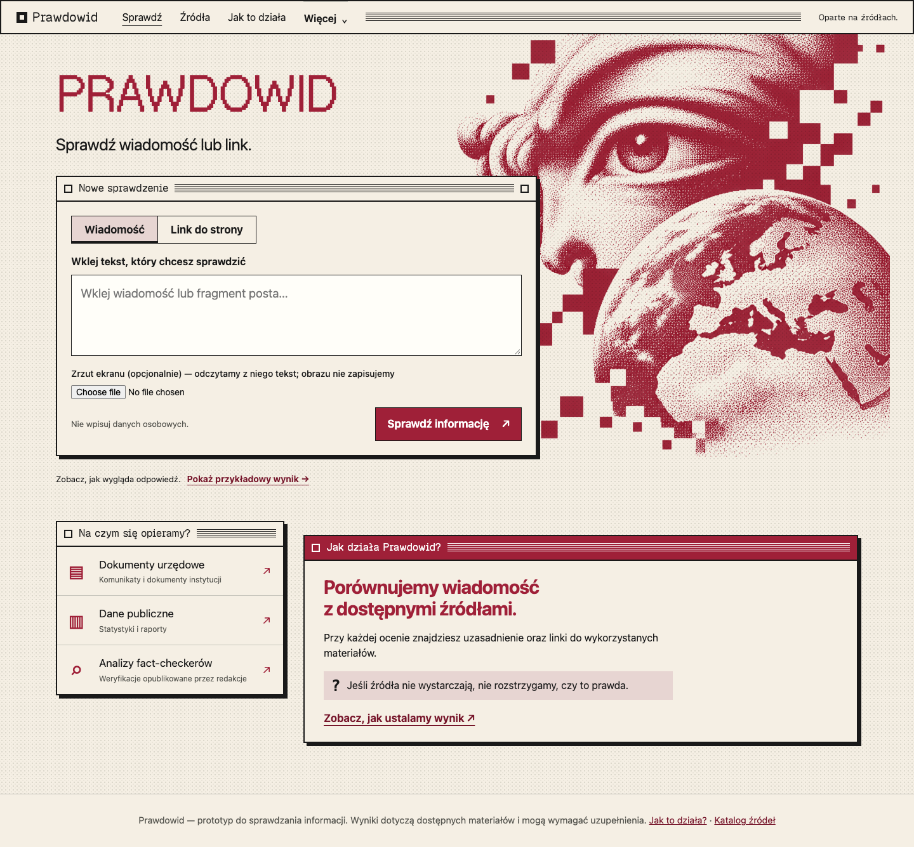
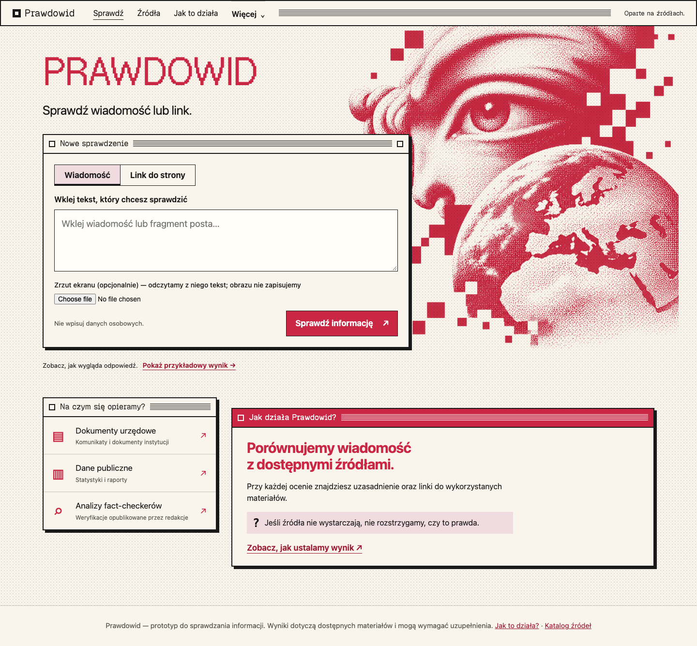
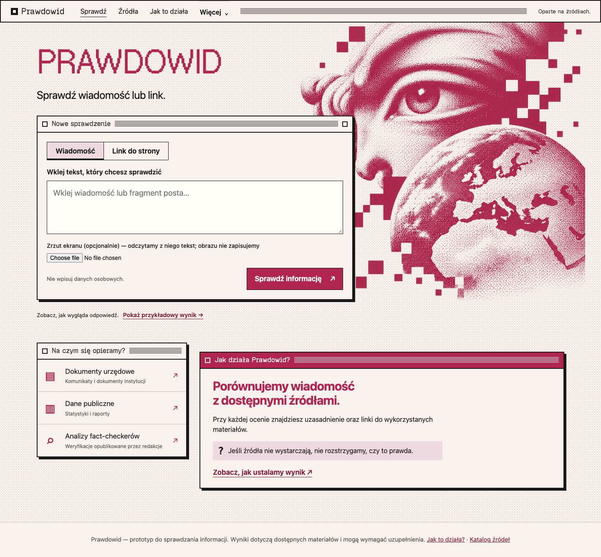
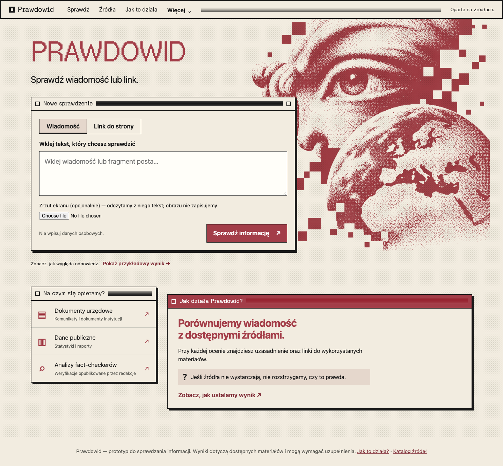

11 / Karmin — punkt odniesienia
#b9233e#8d152c#f7f2e8#eddcda
Oryginał do porównania: nasycony karmin z chłodną nutą i jasna kość słoniowa.
21 / Karmin i ciepły krem
#bb2d35#8f1e28#faf0e2#edd9ce
Nieco cieplejsza czerwień, mniej różowa. Kremowe tło podkreśla charakter drukowanej ryciny.
22 / Głęboki karmin
#9f2038#76152a#f5efe4#e7d5d2

Ciemniejszy i spokojniejszy od oryginału. Mocny kontrast, elegancki charakter i cieplejszy papier.
23 / Soczysty karmin
#c92743#9c1a32#faf5ec#f0dce0

Jaśniejsza, bardziej nasycona czerwień na delikatniejszej kości słoniowej. Najbardziej wyrazisty wariant tej rodziny.
24 / Karmin z nutą maliny
#b12650#851b3b#f8f1ed#edd9df

Subtelne przesunięcie w stronę maliny. Chłodniejszy, lżejszy odbiór przy zachowaniu mocnego czerwonego akcentu.
25 / Karmin na starym papierze
#a33d48#7e2a35#f2ece0#e5d7cc

Mniej nasycony, miękki karmin i ciemniejszy papier. Najspokojniejsza, lekko nostalgiczna interpretacja oryginału.